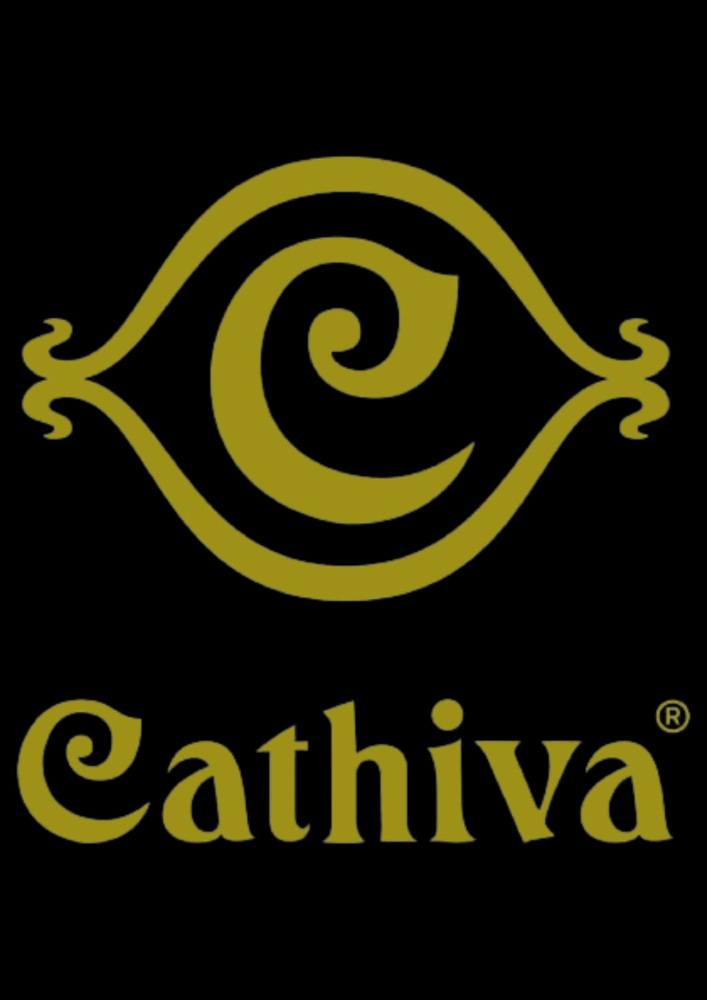
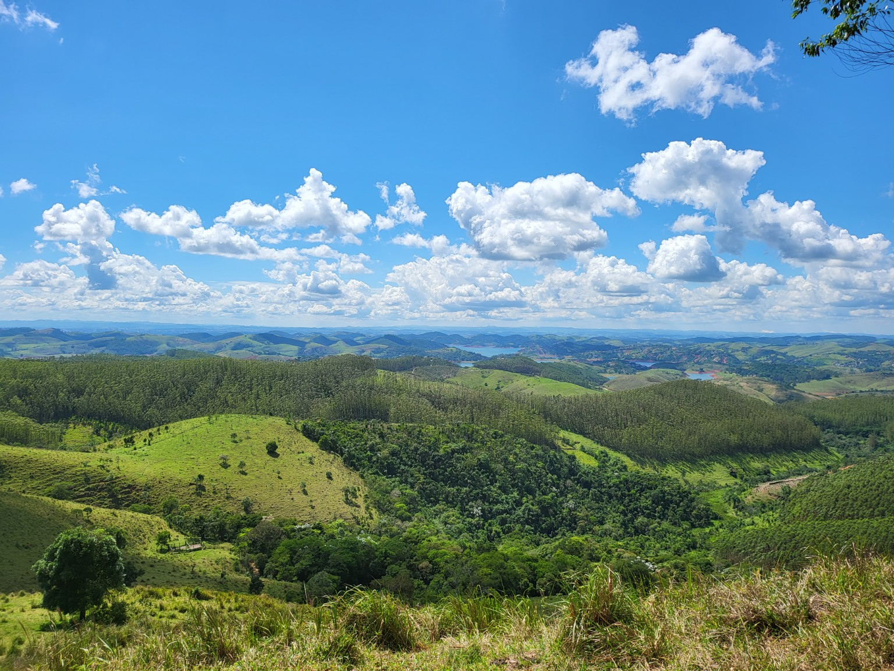
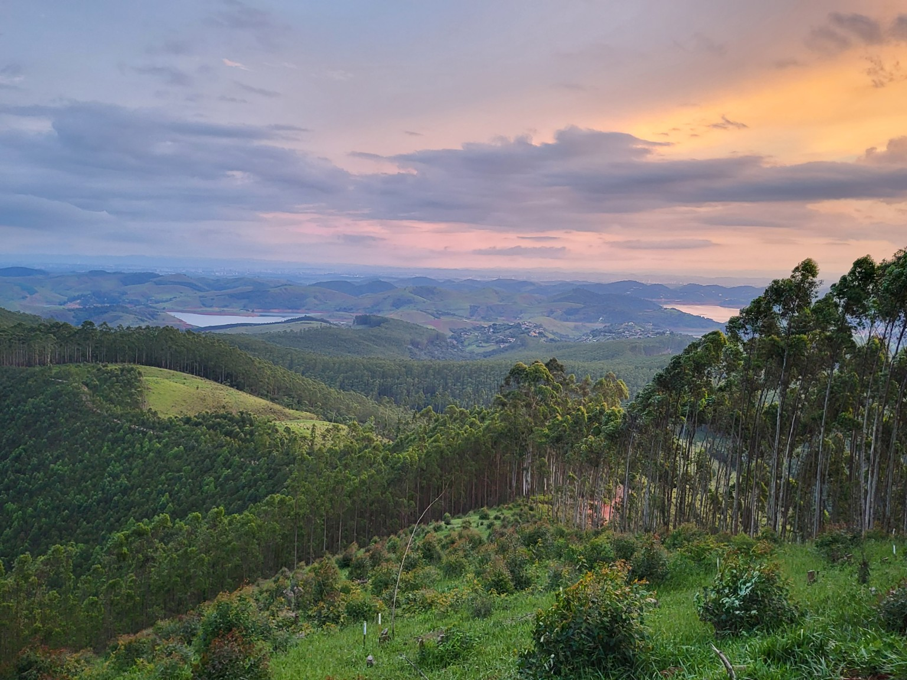
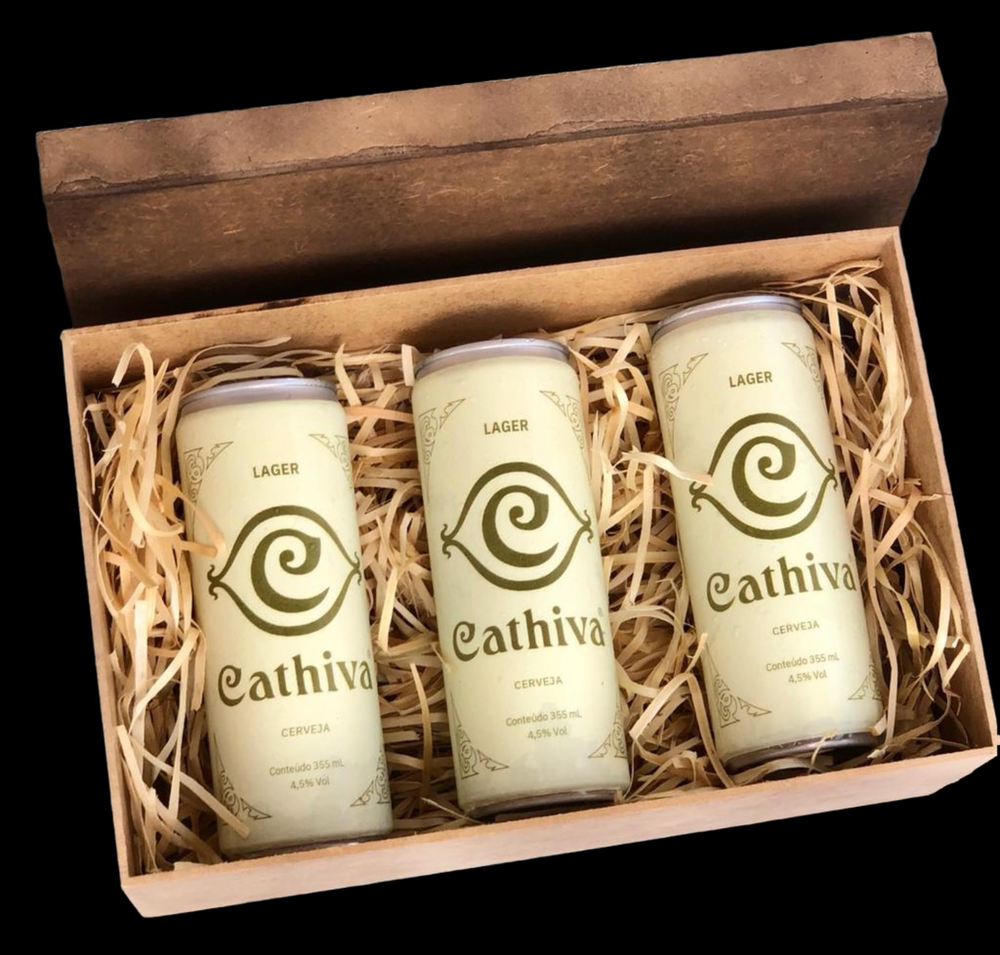
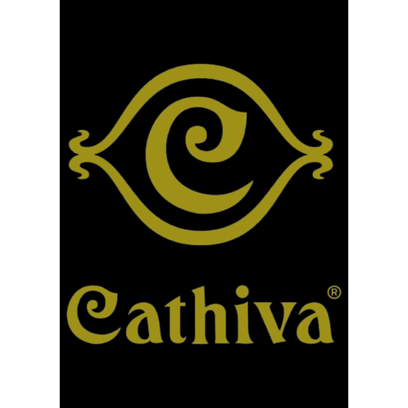

01
Cerveja artesanal
Receitas, rótulos e produtos criados com cuidado, identidade e vontade de oferecer algo especial.

Uma história feita de cerveja, natureza e sonhos.
A Cathiva nasceu de uma paixão pela cerveja artesanal e de um sonho: criar um lugar onde cerveja, natureza e boas experiências pudessem se encontrar.
Foi em Igaratá, no interior de São Paulo, que esse projeto começou a ganhar forma. Mais do que produzir cerveja, imaginamos um espaço para receber pessoas, compartilhar momentos e celebrar tudo aquilo que existe ao redor de uma boa cerveja.
Durante essa jornada, a Cathiva deixou de ser apenas uma ideia. Ganhou identidade, projetos, sabores, histórias e pessoas que acreditaram conosco.

Desde o princípio, a Cathiva foi pensada para ir além da bebida. A proposta era proporcionar uma experiência diferenciada, unindo os encantos naturais do Brasil a uma linha de cervejas artesanais e a momentos que valessem a viagem.
Receitas, rótulos e produtos criados com cuidado, identidade e vontade de oferecer algo especial.
Um lugar escolhido pela paisagem, pela natureza e pelo convite para desacelerar e aproveitar o caminho.
Mais do que consumir cerveja: viver encontros, conversas, passeios e memórias em torno dela.


Houve uma marca. Houve rótulos. Houve um sonho. E isso permanece fazendo parte da nossa história.
Cada detalhe da Cathiva foi pensado para transformar uma paixão em algo real. Dos primeiros estudos e projetos à identidade da marca, das receitas de cerveja à escolha de Igaratá como nossa casa, foram muitos passos, aprendizados e histórias construídas ao longo do caminho.
Nem todos os projetos seguem exatamente o destino que imaginamos quando começam. Alguns realizam seu propósito também pelo caminho que nos fazem percorrer, pelas pessoas que aproximam e por tudo aquilo que nos ensinam.
Ficam as histórias, as experiências, os encontros, os aprendizados e, principalmente, o carinho por tudo aquilo que construímos.
A todos que acompanharam, apoiaram, participaram ou simplesmente torceram pela Cathiva em algum momento dessa jornada: obrigado por fazer parte dessa história.
